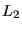
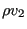
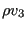

Next: Result output Up: Three-Dimensional Navier-Stokes Calculations Previous: Calculation of the smoothing Contents
Finally, the    of the norm of
the variables themselves. The quotient of these norms is stored in
file jobname.fcv (increment number,
of the norm of
the variables themselves. The quotient of these norms is stored in
file jobname.fcv (increment number,
 ,
,  ,
,  (incompressible) or
(incompressible) or  (compressible),
(compressible),  and
and
 (only for turbulent calculations) and the size of the fluid time
increment, in that order).
(only for turbulent calculations) and the size of the fluid time
increment, in that order).